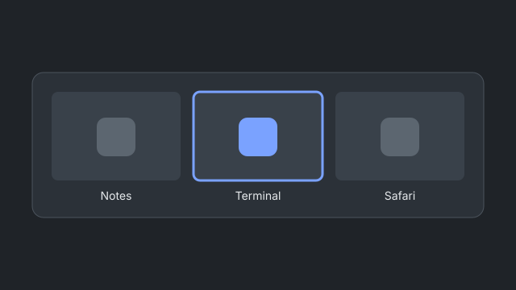

What it does
macOS switches applications with ⌘-Tab, not windows. OpenSwitchr lists every window on the current Space, with live previews, and shows an application's windows when you hover its Dock icon. The window index, event bus and thumbnail cache exist once, so the two do not pay for the same work twice.

Requires macOS 15 or later on Apple silicon, with the Accessibility permission; Screen Recording adds live previews and the app falls back to icons without it.
How to get it
Build from source; the full steps, including signing, are in the README.
git clone https://github.com/trsdn/OpenSwitchr.git
cd OpenSwitchr
bash scripts/build-app.shNotarized builds will be attached to the releases page once one is published.
Privacy
OpenSwitchr collects nothing and sends no data about you or your windows. Its one network connection is a daily update check to GitHub, which you can turn off. Preferences are stored locally and thumbnails live in memory only. This page loads no third-party resources, sets no cookies and has no analytics. Details in the README.